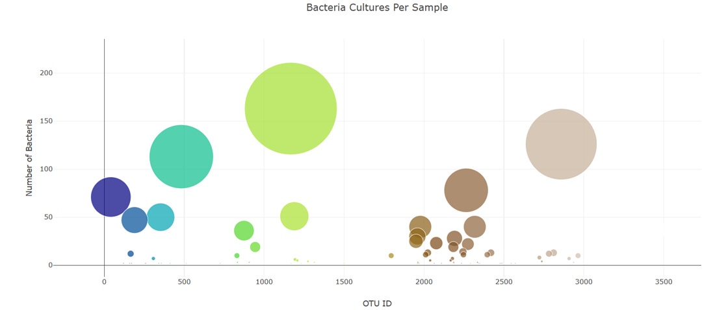
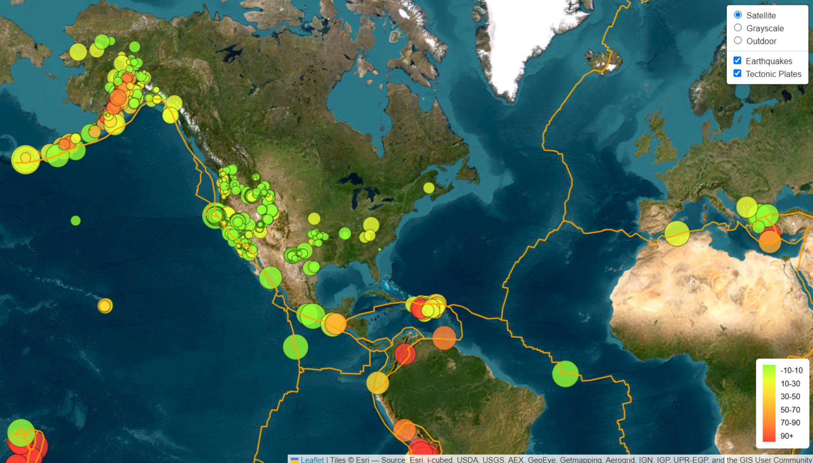
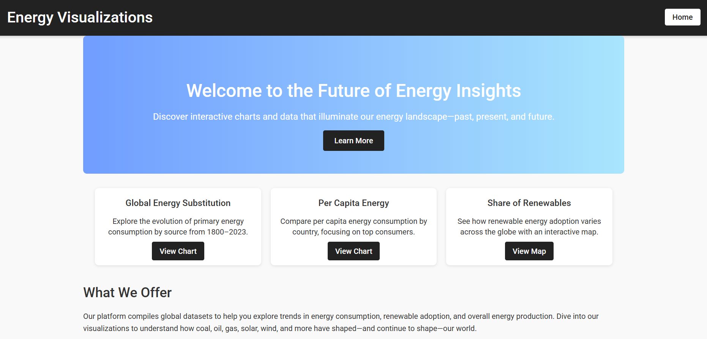

Data Analytics Graduate • Customer Success Professional
I turn messy data into clear insights — and occasionally coffee into dashboards.
I'm a customer-focused professional with experience supporting customers, solving problems, and improving processes. After completing the University of Toronto Data Analytics Bootcamp, I combine data analysis with strong communication skills to turn complex information into insights people can actually use.
Translation: I like charts that answer questions before someone even asks them.

Interactive visualization exploring bacterial cultures per sample using bubble size to reveal dominant species.

Interactive map visualizing worldwide earthquakes with magnitude-based markers and tectonic plate overlays.

Interactive dashboard exploring global energy trends, consumption, and renewable adoption.
If you're a hiring manager exploring this page — welcome! This site is intentionally simple so it's easy to navigate without needing GitHub knowledge.